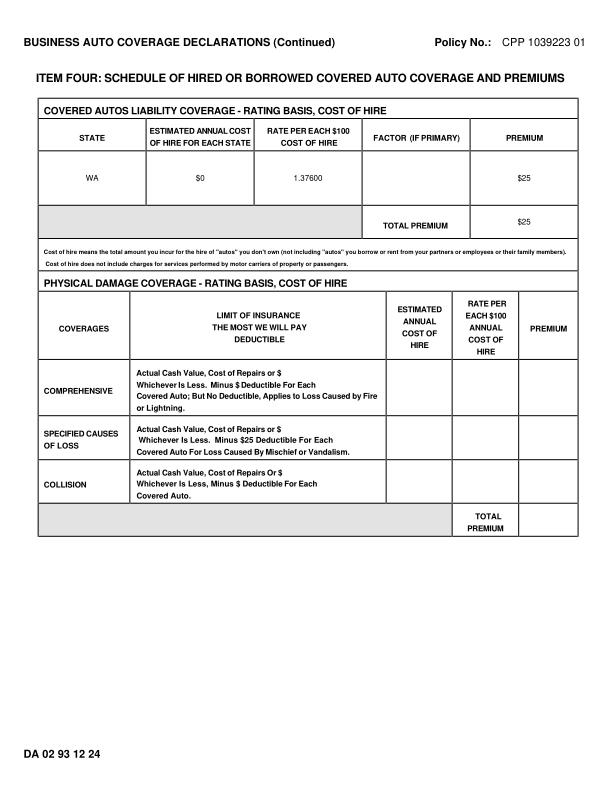
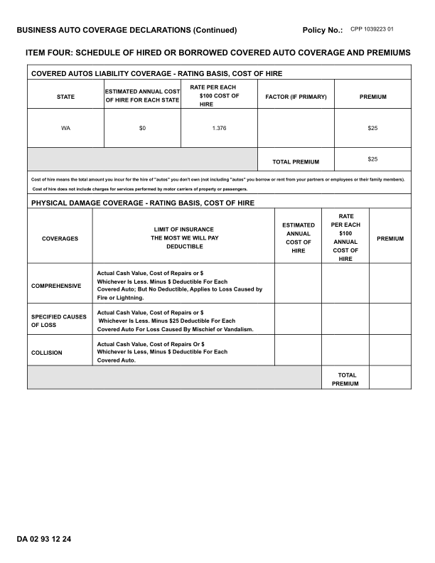
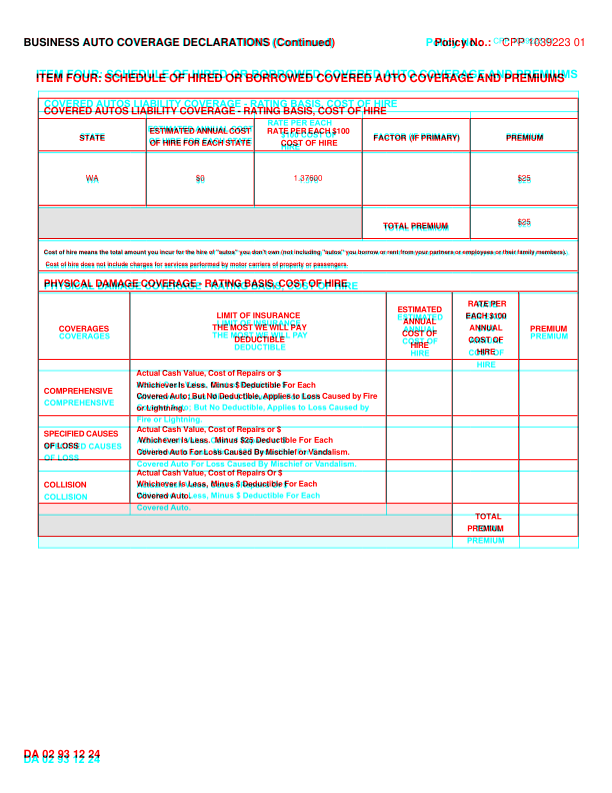
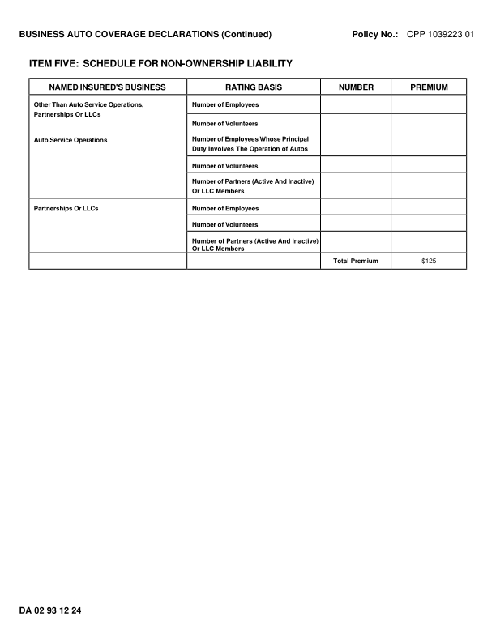
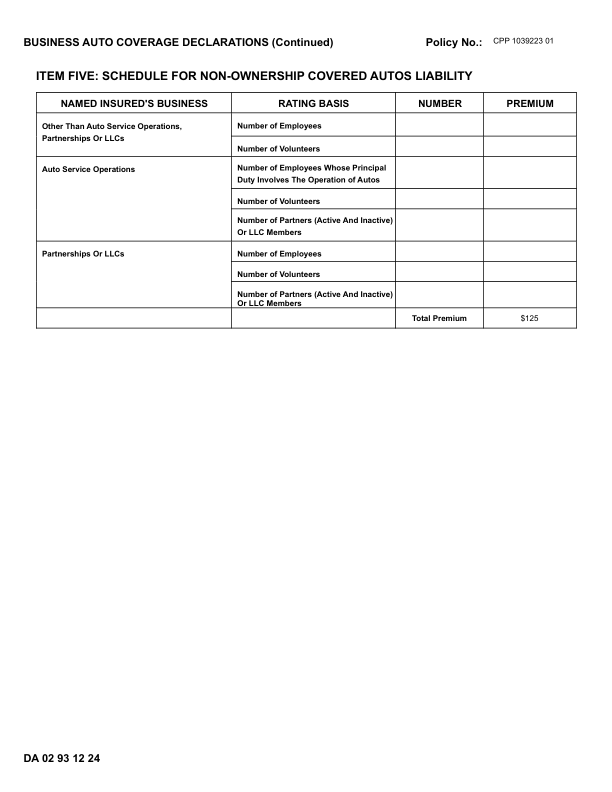
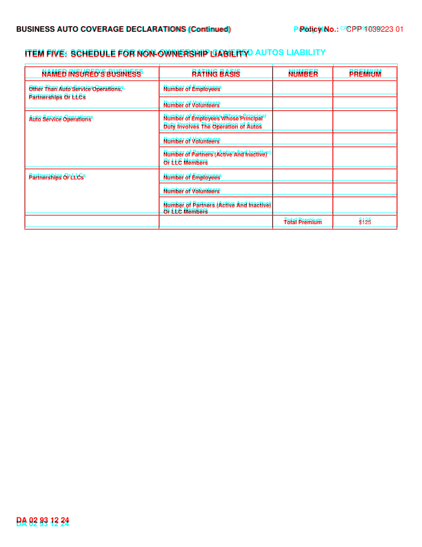

DA0293_1224: DIFFERENT score 99.2% pages golden 2 html 2 (pages with text) words golden 311 html 314 missing 1 extra 4 MISSING (in the GhostDraft golden, not in the HTML render) [37600] <= WA $0 1.37600 $25 EXTRA (in the HTML render, not in the GhostDraft golden) [376] <= WA $0 1.376 $25 [HIRE] <= HIRE [COVERED] <= ITEM FIVE: SCHEDULE FOR NON-OWNERSHIP COVERED AUTOS LIABILITY [AUTOS] <= Duty Involves The Operation of Autos golden C:\src\fact-docgen\src\Moe.Commercial.Documents.Generation.Integration.Tests\TestData\Snapshots\DA0293_1224\GoldenSnapshot.txt template C:\src\fact-poc\output\ghostdraft\batch\DA0293-1224.json serverxml C:\src\fact-poc\output\ghostdraft\serverxml\DA0293_1224\ServerXml.xml



moved Policy (-8.7, -0.2)pt moved No.: (-8.7, -0.2)pt moved ITEM (+0.0, -4.1)pt moved FOUR: (+0.8, -4.1)pt moved SCHEDULE (+2.0, -4.1)pt moved OF (+3.8, -4.1)pt moved HIRED (+4.4, -4.1)pt moved OR (+5.5, -4.1)pt moved BORROWED (+6.1, -4.1)pt moved COVERED (+7.9, -4.1)pt moved AUTO (+9.0, -4.1)pt moved COVERAGE (+9.9, -4.1)pt moved AND (+11.2, -4.1)pt moved PREMIUMS (+11.9, -4.1)pt moved COVERED (+0.2, -6.9)pt moved AUTOS (+1.5, -6.9)pt moved LIABILITY (+2.5, -6.9)pt moved COVERAGE (+4.4, -6.9)pt moved - (+6.3, -6.9)pt moved RATING (+6.7, -6.9)pt moved BASIS, (+7.3, -6.9)pt moved COST (+8.7, -6.9)pt moved OF (+9.7, -6.9)pt moved HIRE (+10.4, -6.9)pt moved ESTIMATED (-1.7, -2.6)pt moved ANNUAL (-1.3, -2.6)pt moved COST (+2.1, -2.6)pt moved $100 (-51.2, +3.4)pt moved FACTOR (+0.2, -2.1)pt moved (IF (-1.2, -2.1)pt moved PRIMARY) (-0.6, -2.1)pt moved PREMIUM (+0.2, -2.1)pt moved OF (-1.0, -2.6)pt moved HIRE (-0.7, -2.6)pt moved FOR (+0.2, -2.6)pt moved EACH (+1.0, -2.6)pt moved STATE (+2.0, -2.6)pt moved HIRE (-37.5, +3.4)pt moved WA (+0.5, +2.2)pt moved $0 (+0.4, +2.2)pt moved $25 (+0.4, +2.2)pt moved rent (+2.0, +0.3)pt moved from (+2.0, +0.3)pt moved your (+2.2, +0.3)pt moved partners (+2.4, +0.3)pt moved or (+2.5, +0.3)pt moved employees (+2.6, +0.3)pt moved or (+2.6, +0.3)pt moved their (+2.8, +0.3)pt moved family (+3.0, +0.3)pt moved members). (+3.1, +0.3)pt moved DAMAGE (+2.1, +1.9)pt moved COVERAGE (+3.6, +1.9)pt moved - (+5.6, +1.9)pt moved RATING (+6.1, +1.9)pt moved BASIS, (+6.9, +1.9)pt moved COST (+8.4, +1.9)pt moved OF (+9.4, +1.9)pt moved HIRE (+10.0, +1.9)pt moved RATE (+9.1, +0.3)pt moved PER (-24.9, +12.3)pt moved LIMIT (+0.5, +7.3)pt moved OF (+0.4, +7.3)pt moved INSURANCE (+0.4, +7.3)pt moved $100 (-11.8, +12.3)pt moved THE (-0.0, +7.3)pt moved MOST (+0.6, +7.3)pt moved WE (+1.1, +7.3)pt moved WILL (+1.7, +7.3)pt moved PAY (+2.1, +7.3)pt moved COVERAGES (+0.2, +6.7)pt moved PREMIUM (+0.3, +6.7)pt moved COST (+0.3, +7.3)pt moved OF (+0.6, +7.3)pt moved DEDUCTIBLE (-0.1, +7.3)pt moved COST (+0.2, +12.3)pt moved OF (+0.6, +12.3)pt moved HIRE (+0.0, +12.3)pt moved Actual (+0.3, +11.2)pt moved Cash (+1.1, +11.2)pt moved Value, (+1.8, +11.2)pt moved Cost (+2.2, +11.2)pt moved of (+2.9, +11.2)pt moved Repairs (+3.5, +11.2)pt moved or (+4.4, +11.2)pt moved $ (+5.0, +11.2)pt moved Whichever (+0.2, +11.2)pt moved Is (+1.0, +11.2)pt moved Less. (+1.5, +11.2)pt moved Minus (+0.4, +11.2)pt moved $ (+1.0, +11.2)pt moved Deductible (+1.9, +11.2)pt moved For (+3.2, +11.2)pt moved Each (+3.8, +11.2)pt moved COMPREHENSIVE (+0.2, +11.2)pt moved Covered (+0.2, +10.7)pt moved Auto; (+1.1, +10.7)pt moved But (+1.9, +10.7)pt moved No (+2.7, +10.7)pt moved Deductible, (+3.2, +10.7)pt moved Applies (+4.3, +10.7)pt moved to (+5.4, +10.7)pt moved Loss (+5.9, +10.7)pt moved Caused (+6.8, +10.7)pt moved by (+7.7, +10.7)pt moved Fire (-226.4, +22.7)pt moved or (+17.1, +10.7)pt moved Lightning. (+17.4, +10.7)pt moved Actual (+0.2, +10.5)pt moved Cash (+1.3, +10.5)pt moved Value, (+1.9, +10.5)pt moved Cost (+2.4, +10.5)pt moved of (+3.1, +10.5)pt moved Repairs (+3.6, +10.5)pt moved or (+4.7, +10.5)pt moved $ (+5.1, +10.5)pt moved SPECIFIED (+0.2, +11.9)pt moved CAUSES (+2.4, +11.9)pt moved Whichever (+0.3, +10.9)pt moved Is (+0.2, +10.9)pt moved Less. (+0.2, +10.9)pt moved Minus (-1.8, +10.9)pt moved $25 (-1.8, +10.9)pt moved Deductible (-1.8, +10.9)pt moved For (-1.9, +10.9)pt moved Each (-1.9, +10.9)pt moved OF (+0.2, +11.2)pt moved LOSS (+0.3, +11.2)pt moved Covered (+0.2, +10.9)pt moved Auto (+1.1, +10.9)pt moved For (+1.9, +10.9)pt moved Loss (+2.6, +10.9)pt moved Caused (+3.3, +10.9)pt moved By (+4.2, +10.9)pt moved Mischief (+5.0, +10.9)pt moved or (+6.1, +10.9)pt moved Vandalism. (+6.6, +10.9)pt moved Actual (+0.2, +11.2)pt moved Cash (+1.3, +11.2)pt moved Value, (+2.0, +11.2)pt moved Cost (+2.4, +11.2)pt moved of (+3.1, +11.2)pt moved Repairs (+3.5, +11.2)pt moved Or (+4.7, +11.2)pt moved $ (+5.2, +11.2)pt moved Whichever (+0.2, +10.7)pt moved Is (+0.2, +10.7)pt moved Less, (+0.2, +10.7)pt moved Minus (+0.2, +10.7)pt moved $ (+0.2, +10.7)pt moved Deductible (+0.2, +10.7)pt moved For (+1.7, +10.7)pt moved Each (+2.4, +10.7)pt moved Covered (+0.2, +10.7)pt moved Auto. (+0.0, +10.7)pt moved TOTAL (+0.5, +10.9)pt moved PREMIUM (-0.3, +10.9)pt moved DA (-0.0, +4.1)pt moved 02 (-0.4, +4.1)pt moved 93 (-0.4, +4.1)pt moved 12 (-0.4, +4.1)pt moved 24 (-0.4, +4.1)pt missing h rule at 98.3 (38.7-577.6) missing h rule at 118.6 (38.7-577.6) missing h rule at 204.9 (38.2-577.6) missing h rule at 238.1 (38.2-577.6) missing h rule at 359.5 (38.7-577.6) missing h rule at 415.8 (38.7-577.6) missing h rule at 459.8 (38.7-577.6) missing h rule at 502.8 (38.2-577.6) missing h rule at 535.9 (38.2-577.6) extra h rule at 91.1 (38.2-579.0) extra h rule at 111.4 (38.2-579.0) extra h rule at 207.4 (38.2-579.0) extra h rule at 240.4 (38.2-579.0) extra h rule at 370.1 (38.2-579.0) extra h rule at 426.4 (38.2-579.0) extra h rule at 470.6 (38.2-579.0) extra h rule at 514.1 (38.2-579.0) extra h rule at 547.1 (38.2-579.0) extra v rule at 38.6 (90.8-547.5) extra v rule at 130.1 (293.2-514.5) extra v rule at 146.6 (111.8-207.8) extra v rule at 254.6 (111.8-207.8) extra v rule at 362.6 (111.8-240.8) extra v rule at 386.6 (293.2-514.5) extra v rule at 452.6 (293.2-547.5) extra v rule at 470.6 (111.8-240.8) extra v rule at 519.4 (293.2-547.5) extra v rule at 578.6 (90.8-547.5)



moved Policy (-8.7, -0.2)pt moved No.: (-8.7, -0.2)pt moved ITEM (+0.0, -3.0)pt moved FIVE: (+1.1, -3.0)pt moved SCHEDULE (-0.6, -3.0)pt moved FOR (+0.8, -3.0)pt moved NON-OWNERSHIP (+1.7, -3.0)pt moved LIABILITY (+110.7, -3.0)pt moved NAMED (+0.2, -4.0)pt moved INSURED'S (+1.2, -4.0)pt moved BUSINESS (+2.8, -4.0)pt moved RATING (+0.3, -4.0)pt moved BASIS (+0.6, -4.0)pt moved NUMBER (+0.2, -4.0)pt moved PREMIUM (+0.3, -4.0)pt moved Other (+0.2, -3.0)pt moved Than (+1.2, -3.0)pt moved Auto (+1.8, -3.0)pt moved Service (+2.7, -3.0)pt moved Operations, (+3.7, -3.0)pt moved Number (+0.3, -3.7)pt moved of (+1.1, -3.7)pt moved Employees (+1.5, -3.7)pt moved Partnerships (+0.2, -3.0)pt moved Or (+0.2, -3.0)pt moved LLCs (+0.2, -3.0)pt moved Number (+0.2, -4.0)pt moved of (+1.1, -4.0)pt moved Volunteers (+1.4, -4.0)pt moved Number (+0.3, -4.2)pt moved of (+1.4, -4.2)pt moved Employees (+2.0, -4.2)pt moved Whose (+3.3, -4.2)pt moved Principal (+4.2, -4.2)pt moved Duty (+0.3, -4.2)pt moved Involves (+0.3, -4.2)pt moved The (+0.2, -4.2)pt moved Operation (+0.2, -4.2)pt moved of (+0.2, -4.2)pt moved Autos (-0.0, -4.2)pt moved Number (+0.3, -3.8)pt moved of (+1.1, -3.8)pt moved Volunteers (+1.5, -3.8)pt moved Number (+0.3, -4.1)pt moved of (+1.4, -4.1)pt moved Partners (+2.0, -4.1)pt moved (Active (+3.2, -4.1)pt moved And (+4.0, -4.1)pt moved Inactive) (+4.8, -4.1)pt moved Or (+0.3, -4.1)pt moved LLC (+0.3, -4.1)pt moved Members (+0.3, -4.1)pt moved Partnerships (+0.2, -3.7)pt moved Or (+1.8, -3.7)pt moved LLCs (+2.4, -3.7)pt moved Number (+0.2, -3.7)pt moved of (+1.1, -3.7)pt moved Employees (+1.4, -3.7)pt moved Number (+0.3, -3.6)pt moved of (+1.1, -3.6)pt moved Volunteers (+1.5, -3.6)pt moved Number (+0.3, -3.5)pt moved of (+0.3, -3.5)pt moved Partners (+0.3, -3.5)pt moved (Active (+0.2, -3.5)pt moved And (-0.1, -3.5)pt moved Inactive) (-0.1, -3.5)pt moved Or (+0.3, -3.7)pt moved LLC (+0.3, -3.7)pt moved Members (+0.3, -3.7)pt moved Total (+0.7, -4.0)pt moved Premium (+0.1, -4.0)pt moved $125 (+0.4, -4.0)pt moved DA (-0.0, +4.1)pt moved 02 (-0.4, +4.1)pt moved 93 (-0.4, +4.1)pt moved 12 (-0.4, +4.1)pt moved 24 (-0.4, +4.1)pt missing h rule at 96.8 (36.5-575.2) missing h rule at 116.9 (36.5-575.2) missing h rule at 140.3 (231.2-575.2) missing h rule at 160.6 (36.5-575.2) missing h rule at 192.7 (231.2-575.2) missing h rule at 212.9 (231.2-575.2) missing h rule at 245.0 (36.5-575.2) missing h rule at 265.3 (231.2-575.2) missing h rule at 285.4 (231.2-575.2) missing h rule at 312.2 (36.5-575.2) missing h rule at 332.4 (36.5-575.2) extra h rule at 92.6 (36.0-576.8) extra h rule at 112.9 (36.0-576.8) extra h rule at 136.1 (231.8-576.8) extra h rule at 156.4 (36.0-576.8) extra h rule at 188.6 (231.8-576.8) extra h rule at 208.9 (231.8-576.8) extra h rule at 241.1 (36.0-576.8) extra h rule at 261.4 (231.8-576.8) extra h rule at 281.6 (231.8-576.8) extra h rule at 307.9 (36.0-576.8) extra h rule at 328.1 (36.0-576.8)